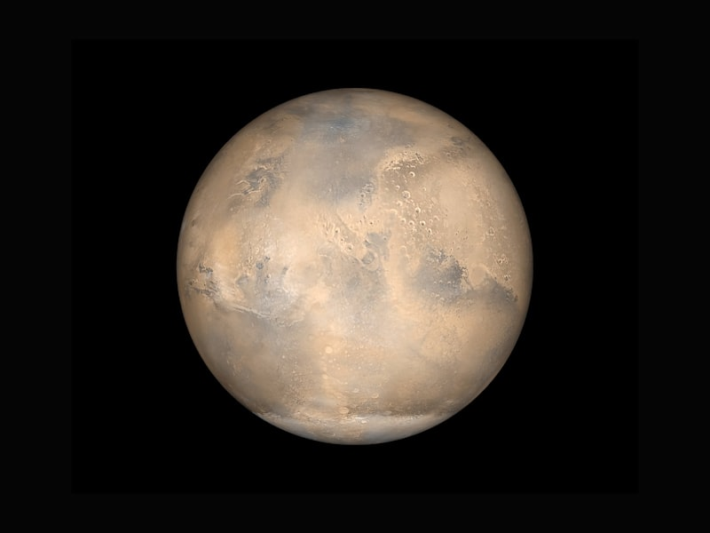

📅 Launched: July 30, 2020
Exploring Mars' Jezero Crater to seek signs of ancient life and collect samples for future return to Earth. The most sophisticated rover ever sent to the Red Planet.

The Mars 2020 Perseverance rover mission is part of NASA's Mars Exploration Program, a long-term effort of robotic exploration of the Red Planet. The mission addresses high -. priority science goals for Mars exploration, including key questions about the potential for life on Mars.
Perseverance is designed to better understand the geology of Mars and seek signs of ancient life. The mission will collect and store a set of rock and soil samples that could be returned to Earth in the future. It will also test new technology to benefit future robotic and human exploration of Mars.